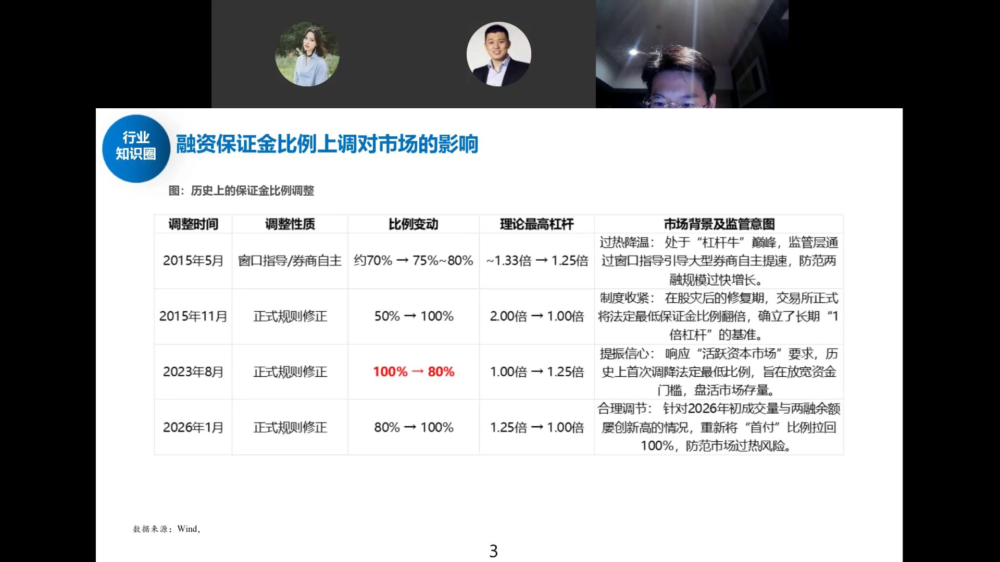
上周三盘中监管上调了融资保证金比例。从历史来看这肯定不是好信号，但历史上也只发生过一次——2015年5月先局部上调（各券商自己调），11月二次冲击时全面上调。
2015年那次上调后，市场没有当天就见顶，而是有惯性，大概半个月到一个月左右才见底。
但历史样本只有一次，参考意义有限。只能说知道有这么回事，不必过度恐慌。监管一周内连续出手（减持→限申购→融资新规），核心是压斜率，不要跟监管对着干。
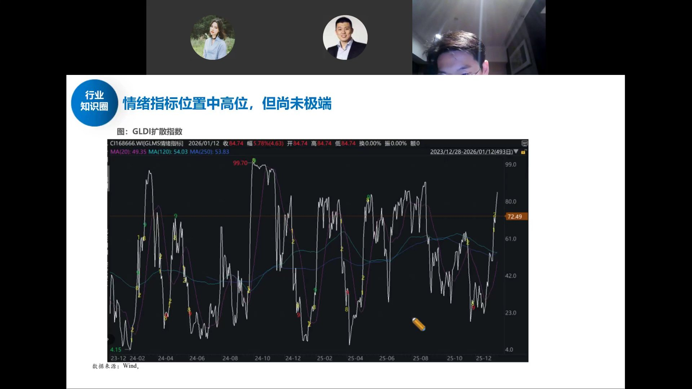
用客观数据看，目前情绪指标大概在80左右的位置。跟2024年10月8日或者去年9月的顶点比还有距离。
市场确实涨得快、涨得猛，但"情绪高"和"一定要逃顶"之间没有等号。没有到那种很夸张的程度。
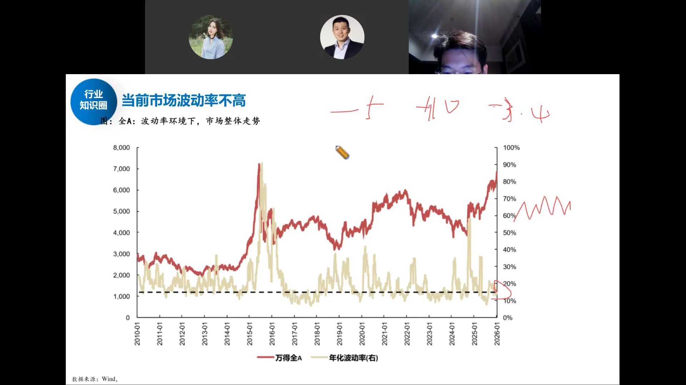
波动率是个专业指标，衡量的是指数每天上蹿下跳的幅度。目前不管看上证、50还是300，每天收益率变化很窄——涨0.5%、跌0.2%，幅度非常窄。
大跌的时候波动率一定很高。低波环境通常意味着市场比较安全。
波动率预测不了涨跌（跟算命一样），但它是已发生的事实。大行情只有两种：左上方低波趋势慢牛，或者右上方暴跌后V型修复。去年6-8月就是典型慢牛，今年1月以来也在这个状态。
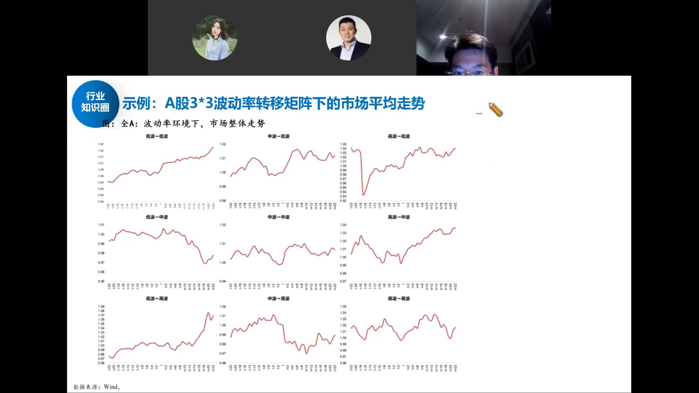
把市场按波动率高低和涨跌幅排列成九宫格，历史规律非常清晰：
海外市场左上方慢牛更多（美股任何回调都是买入机会），A股右上方V型更多，所以体验不好。但本质上权益资产赚钱逻辑一样：要么赚趋势的钱，要么赚暴跌后修复的钱。
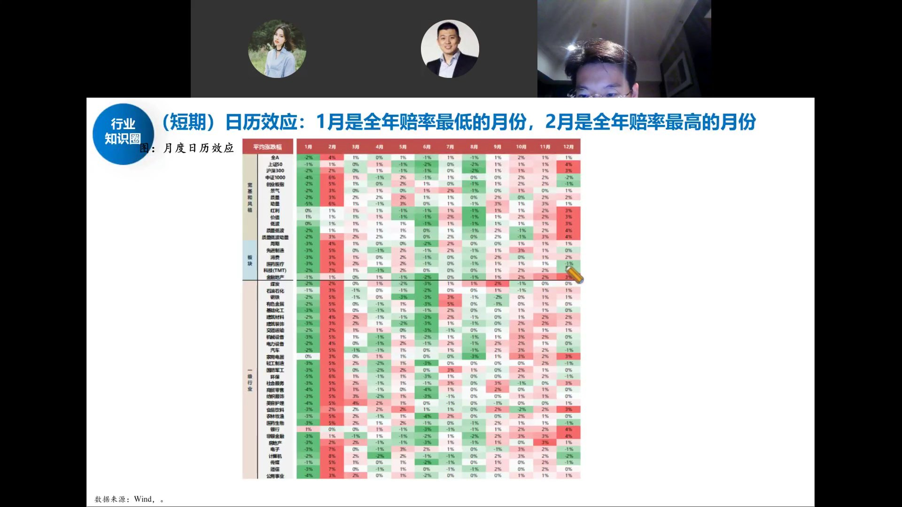
把2010年以来每个月各行业的平均涨幅拉出来，可以看到非常规律的日历效应：
往年剧本：1月先砸坑，1月底2月才开始涨。2025年1月、2024年1月都是这样。但今年不按剧本走——从去年12月就开始蠢蠢欲动，过了元旦直接爆拉。
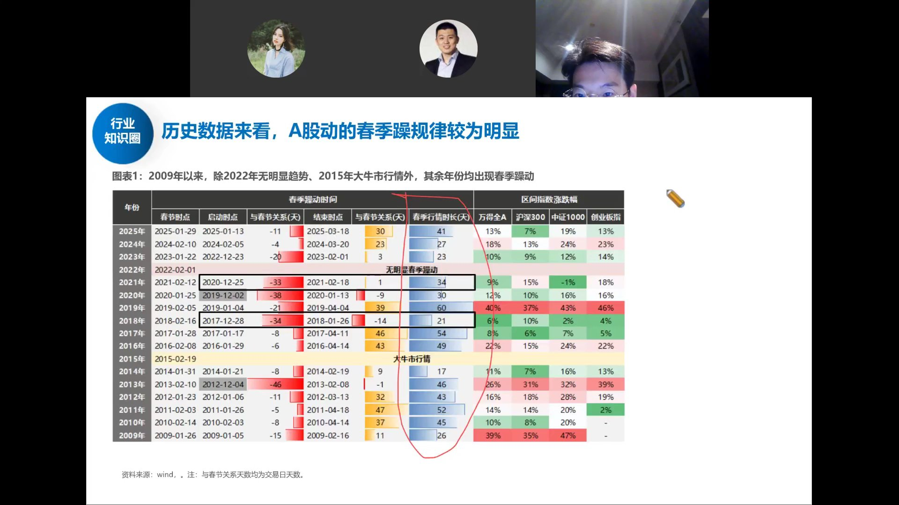
不管春节行情从什么时候开始涨，平均持续时间约40个交易日（两个月）。一波行情最舒服的上涨期一般也就两个月。
过去15年里，从12月就开始涨的只有5次（黑色框标注），剩下10次都是1月先跌再涨。今年是第6次。
既然从12月开始涨，两个月刚好到春节附近（今年2月中旬过年）。按历史规律推演，春节前后是需要注意的时间窗口。
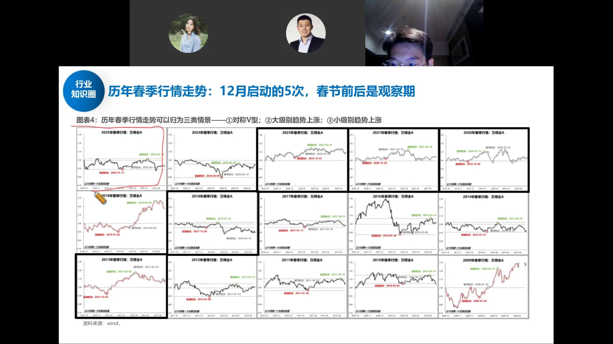
15张小图，每张代表一年的春季行情。红线是启动点，灰线是结束点，中间是春节。
5次12月启动的行情复盘：
5次无一例外都是春节附近见顶。崩的原因千奇百怪（美股、疫情、量跟不上、复苏收足），但时间点高度一致。建议：春节前如果涨得不错，适当兑现一部分，不必全清——踏空比亏钱更难受。
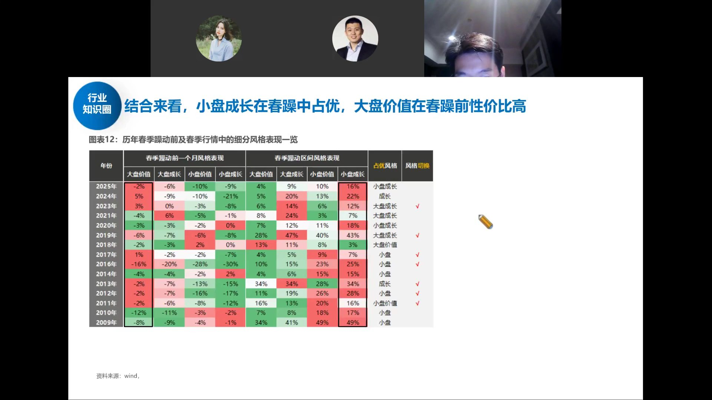
春节前如果还有行情，方向上偏成长、偏小票弹性。因为短期不炒基本面——业绩空窗期，就是自由交易、轮动、主题炒作。
另外注意节奏：春节前10个交易日左右胜率非常高（俗称"过个好年"）。要清仓也别清太早，春节前一两周大概率是涨的。
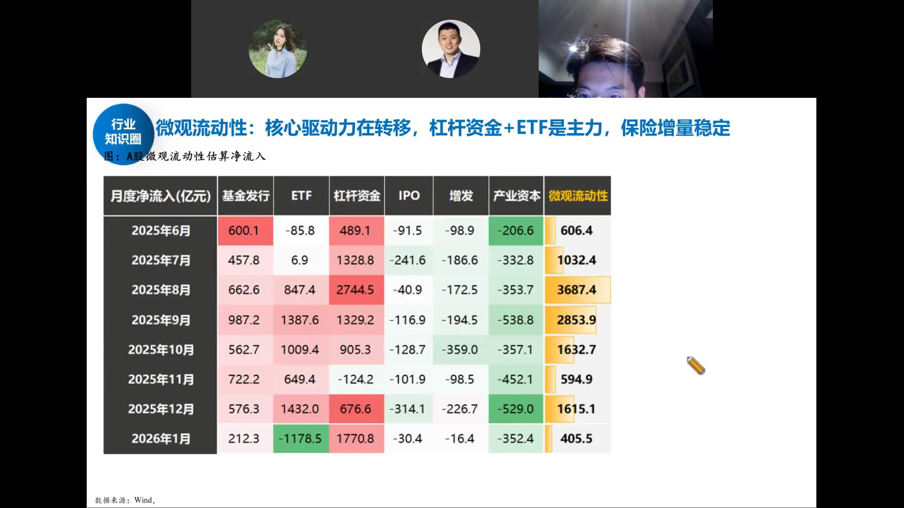
今年开年这波行情的资金结构：
跟924那波不一样，这次增量主要是杠杆和ETF，不是散户直接开户。
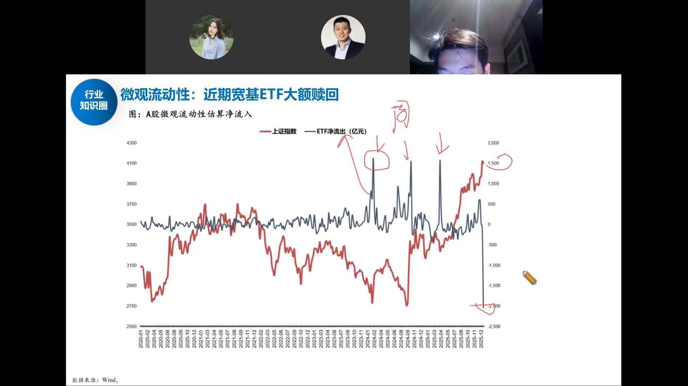
蓝线是周度宽基ETF申赎规模。历史上救市时（微盘崩盘、924前、4月7日），托底规模约1500亿/周。
上周净赎回约2000亿——相当于以往一轮救市的量甚至更多。这两周估计还有千把亿。
原因不得而知（ETF不公布具体谁在卖），但核心是前面涨太猛、斜率太快。监管一周内连续出手压节奏是对的——如果每周涨一两百点，春节就4500了。这不影响短期趋势方向，但斜率肯定要放缓。
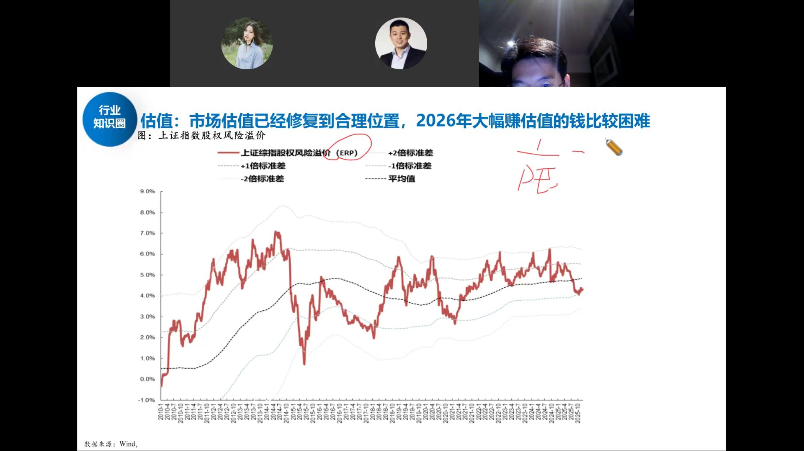
ERP（股权风险溢价）= 股息率 - 国债收益率，衡量股票相对债券的性价比。红线越高股票越便宜，越低越贵。
去年924时ERP在极高位（股票极便宜），同时EPS从负增长转正（方向往上拐头）——"位置低+方向改善"，所以去年钱非常好赚，到处是洼地，水多了都能填平。
今年不一样了：ERP已经回到均值以下，估值修复的钱赚完了。2026年不要期望像去年那样大幅赚估值的钱，全年赚的是业绩/EPS的钱。
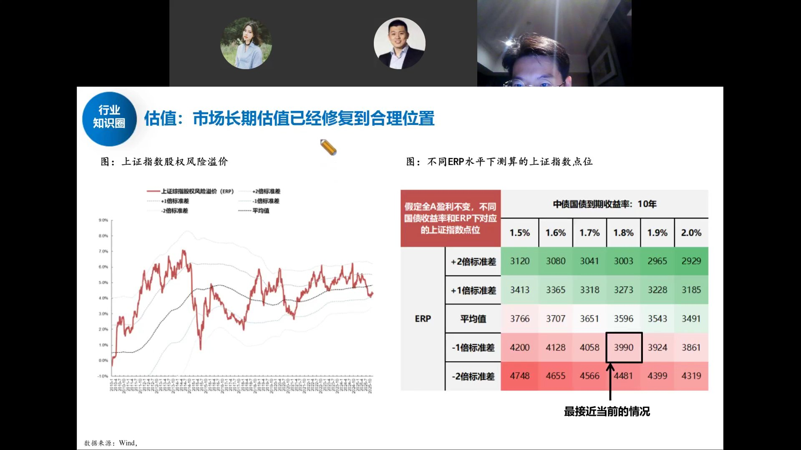
假定全A盈利不变，不同国债收益率和ERP水平下对应的上证点位：
当前位置已经在合理偏贵的区域。往上要到4500需要ERP继续压缩（市场更亢奋），往下到3600需要ERP回到均值。2026年指数大幅扩张估值空间有限。
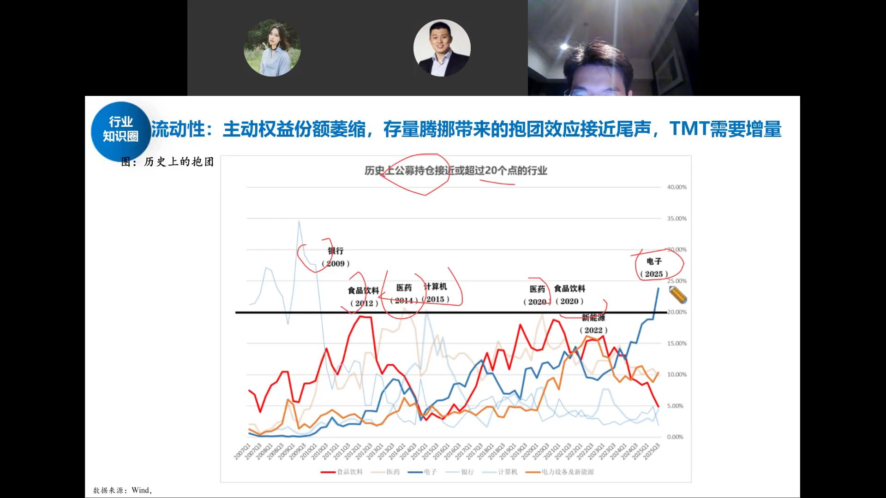
历史上公募单一行业持仓接近或超过20%的只有五次：2009银行、2012食饮、2014医药、2015计算机、2020医药/食饮。本轮电子已到这个极值位。
尊重历史的话，一个行业到20%仓位基本到头了。但不必现在就跑——中间可能还有几个季度上涨。如果上半年再泡沫化一波，那时再考虑切到低位板块。
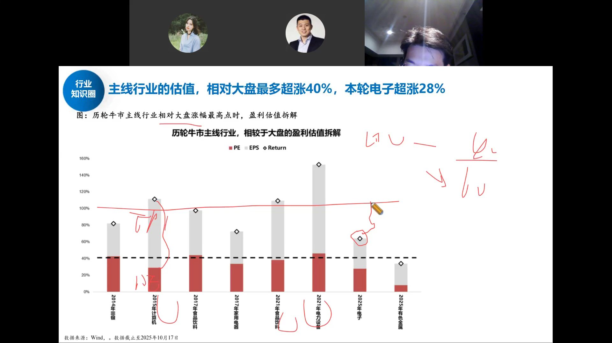
把历轮牛市主线行业的超额涨幅拆成PE贡献（红）和EPS贡献（灰）：
估值扩张的钱赚得差不多了（30/40），后面主要看盈利兑现。如果EPS跟不上估值，主线就到了需要警惕的时候。
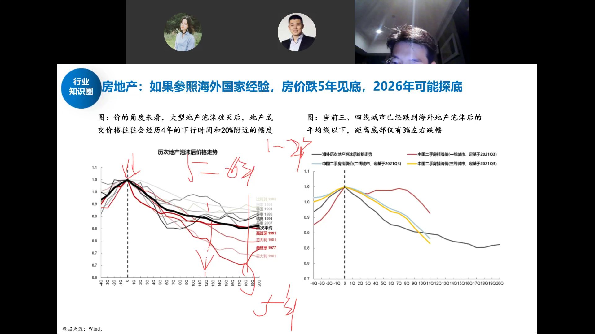
左图：大型地产泡沫破灭后，成交价平均经历4年下行、跌幅约20%。但日本、西班牙等案例跌了5-6年。
右图：当前中国二三线城市房价已经跌到海外泡沫后的平均线以下，距离底部仅约3%跌幅。一线城市还在跌。
结论：今年就是房价的最后一跌，2026年理论上见底。股价领先房价约两年——如果房价今年稳住，权益市场的底部信号就更明确了。
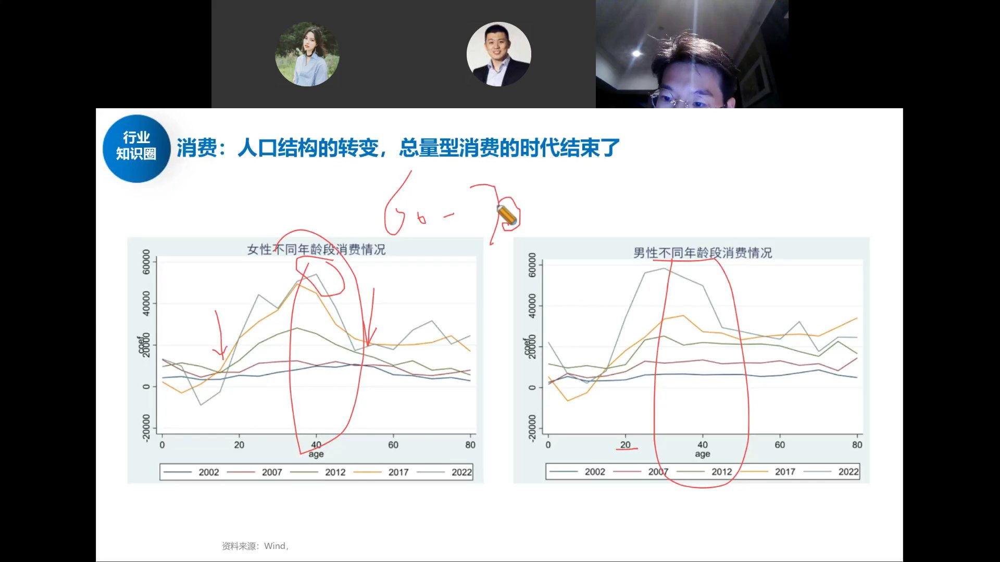
左图女性、右图男性，不同年龄段的消费支出曲线（2002-2022年）。
核心发现：消费高峰在30-40岁年龄段。随着人口结构转变，20-30岁人口在减少，40-50岁人口在增加但消费倾向更低。总量型消费的时代结束了。
白酒、食品饮料这些总量型消费的长期逻辑变了。不是说没有机会，而是不能再给过去那种估值。消费要找结构性机会，不是β行情。
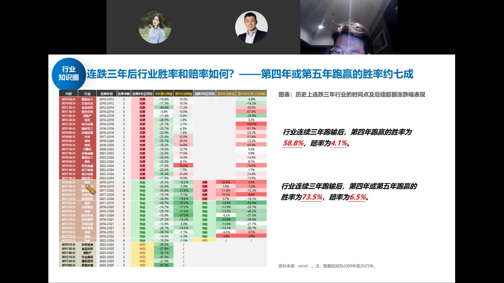
统计历史上连续三年跑输的行业，后续表现：
当前连跌三年的行业：食品饮料（2023-2025）、房地产、社会服务、建筑装饰、美容护理。
如果上半年科技主线泡沫化、指数冲到高位，这些连跌三年的低位行业就到了可以关注的时候——73%的胜率，赔率也不错。但现在还不是时候，先拿住主线。
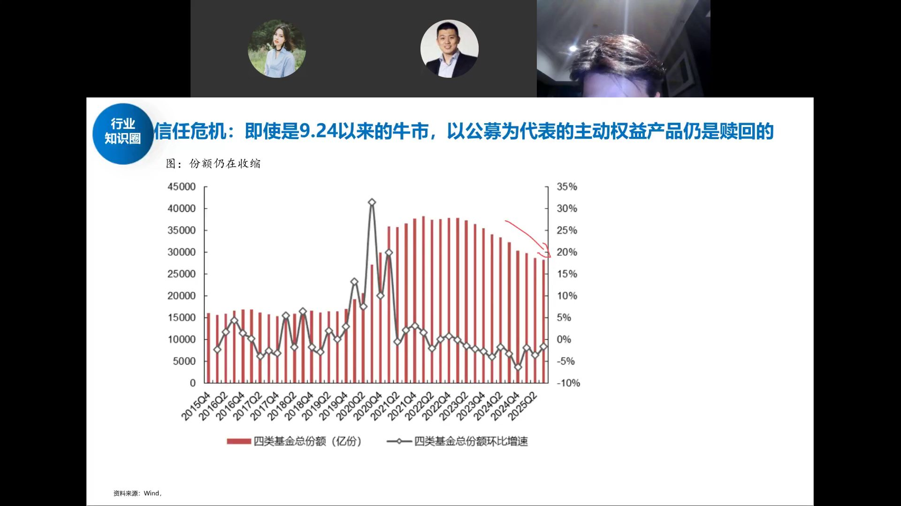
即使是924以来的牛市，以公募为代表的主动权益产品份额仍在收缩（红线柱子在缩短）。
这跟2020-2021年那轮牛市形成鲜明对比——当年公募发行火爆、份额暴增。现在散户不信任主动基金，钱都去了ETF和杠杆。
这既是风险也是好事：没有散户疯狂申购公募，意味着情绪还没到极端。牛市可以走得更慢更稳。等哪天主动权益开始净申购了，反而要警惕——那是情绪过热的信号。